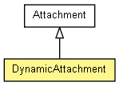

org.apache.wiki.attachment
Class DynamicAttachment
java.lang.Object
 org.apache.wiki.WikiPage
org.apache.wiki.attachment.Attachment
org.apache.wiki.attachment.DynamicAttachment
org.apache.wiki.WikiPage
org.apache.wiki.attachment.Attachment
org.apache.wiki.attachment.DynamicAttachment
- All Implemented Interfaces:
- Cloneable, Comparable
public class DynamicAttachment
- extends Attachment

A DynamicAttachment is an attachment which does not really exist, but is
created dynamically by a JSPWiki component.
Note that a DynamicAttachment might not be available before it is actually
created by a component (e.g. plugin), and therefore trying to access it
before that component has been invoked, might result in a surprising 404.
DynamicAttachments are not listed among regular attachments in the current
version.
Usage:
class MyDynamicComponent implements DynamicAttachmentProvider
{
...
DynamicAttachment destatt = mgr.getDynamicAttachment( destattname );
if( destatt == null )
{
destatt = new DynamicAttachment( context.getEngine(),
context.getPage().getName(),
destfilename,
this );
destatt.setCacheable( false );
}
// This is used to check whether the attachment is modified or not
// so don't forget to update this if your attachment source changes!
// Else JSPWiki will be serving 304s to anyone who asks...
destatt.setLastModified( context.getPage().getLastModified() );
mgr.storeDynamicAttachment( context, destatt );
...
public InputStream getAttachmentData( WikiContext context, Attachment att )
throws IOException
{
byte[] bytes = "This is a test".getBytes();
return new ByteArrayInputStream( bytes );
}
- Since:
- 2.5.34
| Methods inherited from class org.apache.wiki.WikiPage |
clone, compareTo, getAcl, getAttribute, getAttributes, getAuthor, getLastModified, getName, getSize, getVersion, getWiki, hashCode, hasMetadata, invalidateMetadata, removeAttribute, setAcl, setAttribute, setAuthor, setHasMetadata, setLastModified, setSize, setVersion |
DynamicAttachment
public DynamicAttachment(WikiEngine engine,
String parentPage,
String fileName,
DynamicAttachmentProvider provider)
- Creates a DynamicAttachment.
- Parameters:
engine - The engine which owns this attachmentparentPage - The page which owns this attachmentfileName - The filename of the attachmentprovider - The provider which will be used to generate the attachment.
getProvider
public DynamicAttachmentProvider getProvider()
- Returns the provider which is used to generate this attachment.
- Returns:
- A Provider component for this attachment.
Copyright © {inceptionYear}-2014 The Apache Software Foundation. All rights reserved.